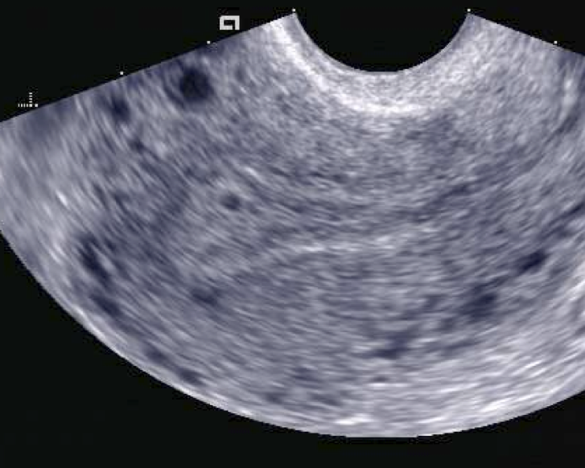

Página 10 · Parte E · Ultrassom
Ultrassom: relógio 4–5–6–7, CCN e DUM × US
Relógio 4 → 5 → 6 → 6–7
O ultrassom confirma a gestação e data com a melhor janela no 1º trimestre.
| IG aproximada | Marco |
|---|---|
| ~4 semanas | Saco gestacional (primeiro marco) |
| ~5 semanas | Vesícula vitelínica (além do saco) |
| ~6 semanas | Embrião |
| Final da 6ª / início da 7ª | BCF ao US |
(Digressão afetiva 3D / “bebê emburrado”: peso baixo — a face toda encolhida no início não substitui o relógio. O que conta é marco, não fofura.)
Vesícula vitelínica como bom sinal
Presença de vesícula vitelínica é bom sinal porque antecede o encontro do embrião. É o “promessa de embrião” no US — quando a vesícula aparece e o embrião ainda não, a sequência ainda é fisiológica.
CCN: janela 6 a 13+6 e margem 5–7 dias
A medida mais fiel para datar no 1º trimestre é o CCN (comprimento cabeça-nádega). Janela: de 6 semanas até 13 semanas e 6 dias (antes de completar 14). Há material que escreve “6 a 14”; a leitura mais estrita (alinhada a FEBRASGO/ACOG na fala) é 6 a 13+6. Em prova, não assustar com as duas grafias — o núcleo é 1º trimestre via CCN.
Margem de erro do CCN nessa janela: ~5 a 7 dias no máximo. Nenhum ultrassom posterior “bate” a fidelidade dessa janela.
Quando manter a DUM e quando seguir o US
Se a IG pela DUM e a do US (CCN) concordam dentro de 5–7 dias, pode-se seguir a DUM. Se a diferença ultrapassa ~1 semana (fora da margem 5–7 dias), esquece a DUM e segue o ultrassom da janela de CCN.
Exemplos 12×12+5 e 12×15
- DUM = 12 semanas e US = 12+3 a 12+5 → dentro da margem → mantém DUM.
- DUM = 12 semanas e US = 15 semanas → fora da margem → segue o US.

A imagem mostra o primeiro marco do relógio: saco gestacional de 2 mm, sem vesícula vitelínica e sem embrião. Caption literal da fonte: “corresponde a aproximadamente 17 dias pós-concepção”. É o ponto da P10 onde o relógio começa — vesícula e embrião ainda não apareceram.
2 mm intrauterine gestational sac (yolk sac and embryo not present). Photo: Luis Goncalves, 2012. Licensed under CC BY-SA 3.0. Source: https://commons.wikimedia.org/wiki/File:2_mm_gestational_sac.png
Quiz — fixação
Ordem correta dos marcos US no início:
- Gabarito B. Relógio do 1º trimestre: saco (~4 sem) → vesícula (~5 sem) → embrião (~6 sem) → BCF (final 6ª/início 7ª).
- (A) inverte a ordem cronológica — embrião vem depois do saco e da vesícula.
- (C) BCF não é o primeiro marco — é o último dos quatro.
- (D) reordena vesícula e BCF — a vesícula antecede o BCF.
- Por que cair na A/D: decorar sem ordem — o relógio tem sequência, não é menu.
Janela do CCN para datação (leitura estrita):
- Gabarito B. Leitura estrita: 6 a 13+6 sem. Há material que escreve “6 a 14”; a leitura alinhada a FEBRASGO/ACOG é 13+6. Em prova, não assustar com as duas grafias.
- (A) 4–10 sem não cobre a janela — o CCN já está disponível aos 6 sem.
- (C) 14–28 sem é o 2º trimestre — a margem cresce e a fidelidade cai.
- (D) a precisão do CCN não se mantém nos outros trimestres.
- Por que cair na A/D: achar que a precisão é uniforme — o 1º trimestre tem a melhor janela do US inteiro.
DUM 12 sem e US 15 sem. Conduta de datação:
- Gabarito B. Diferença > 1 semana (12 vs 15 = 3 semanas de distância) fora da margem 5–7 d → segue o US.
- (A) manter DUM só serve quando a diferença cabe em 5–7 d (ex.: 12 vs 12+5).
- (C) média aritmética não é regra — escolhe o US quando a margem estoura.
- (D) Pinard é ausculta tardia — não data.
- Por que cair na A: hábito de “DUM sempre vale” — vale se a margem confere.